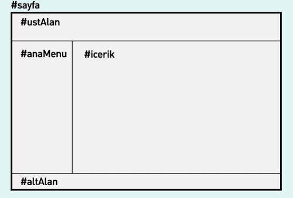
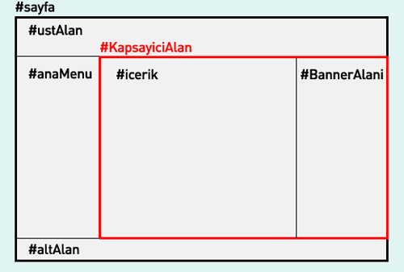

CSS'in en büyük avantajlarından biri ve en önemlisi başka bir koda(XHTML hariç) ihtiyaç duymaksızın sayfa iskeleti ve stilini oluştumamıza olanak sağlamasıdır. CSS 1996'dan beri kullanıla gelen bir standart olsa da popülaretesini Zen Garden'ın sayfa planlaması için kullanmaya başlamasından sonra arttırmıştır. Eskiden sayfayapısını tablolarla oluştururduk. Bu kullanımın bir çok sorunları vardı. Bunları aşmak için CSS ile sayfa planlama metodları kullanılmaya başlanmıştır. Biz burada bu konudan bahsedeceğiz.
CSS ile sayfa planlaması yaparken bazı problemlerle karşılaşacağız, ancak buradan şu anlaşılmamalı CSS'de sorun var. Aksine sorun CSS'den değilde standartları kendine göre yorumlayan web tarayıcılarından kaynaklanmaktadır. Zamanla bu web tarayıcıları kendine çeki düzen vermeye başladı(Örn: İE7 de CSS sorunlarının bir çoğunu halletti) Amaç körü körüne tablosuz web sayfası tasarlamak değil, sayfalarımızı standartlara ve web tarayıcılarına en uygun şekilde kodlamaktır. Hiç tablo kullanmayayım diye tablo kullanılması gerek yerlerde de tablo kullanmamak abesle iştigaldir.
Aslında şimdiye kadar ki makaleler de bu konunun temellerini attık.[CSS ile konumlandırma(positioning)][] , Float ve Clear özellikler ile konumlandırma vd. makaleler bu işin temellerine değindik. Burada daha elle tutulur örneklerle bu metodu anlatmaya çalışacağız.
CSS sayfa planlama metodları üç temel konu üzerine inşa edilmiştir. [Konumlandırma][CSS ile konumlandırma(positioning)], floating ve margin farklılıkları. Bu üç temel konu anlaşıldıktan sonra CSS ile sayfa planlamayı anlamamız çok kolaydır. Biz burada floating metodu ile sayfa oluşturmayı göreceğiz. Bunun dışında konumlandırma öğeleleri kullanarak sayfa oluşturma ve eksi margin değeri ile sayfa oluşturma metodlarıda vardır. Ancak biz burada bunlara değinmeyeceğiz.
Sabit Genişlikteki Sayfalarda İki Kolonlu Yapı

İlk olarak XHTML kodlarını yazalım.
[sourcecode language="html"] \<div id="sayfa"> \<div id="ustAlan"> ... \</div> \<div id="icerik"> ... \</div> \<div id="anaMenu"> ... \</div> \<div id="altAlan"> ... \</div> \</div> [/sourcecode]
Önemli bir nokta varki oda icerik alanının anaMenu'den önce gelmesi gerekmektedir. Erişebilirlilik(yani tüm araçlarda sayfamızın en iyi şekilde görünmesi) için icerik alanının anaMenu'den önce gelmesi gerekir. Çünkü pda ve cep telefonu gibi araçlarda katmanların sıralamasına göre ekranda görüneceğinden, ilk olarak içerik alanının görünmesi tercih sebebidir. şžimdi css kodumuzu yazarsak:
[sourcecode language="css"] #sayfa { width:768px; } #ustAlan { width: 768px; } #icerik { float: right; width: 568px; } #anaMenu { float: left; width: 200px; } #altAlan { width: 768px; clear: both; } [/sourcecode]
Bu kodu yazdıktan sonra sayfamız başta gördüğümüz şekildeki duruma gelmiş bulunmaktadır. Burada yazdığımız kodda "icerik" alanının sağa, "anaMenu" alanının sola yerleşmesi için genişlik değeri ve float değerleri tanınmlanmıştır. Ayrıca altAlan'ın bu iki bölümün altında kalması için clear:both tanımlaması yapılmıştır.
[CSS ile sayfalarımızı ve elementlerimizi ortalamak][] bölümündeki metodu uygulayarak sayfamızı ortalayabilriz.
[sourcecode language="css"] #sayfa{ width: 768px; margin:0 auto; } [/sourcecode]
Örnek kodları görmek için tıklayınız.
Sabit Genişlikteki Sayfalarda en çok rastlanan problemler sabit genişlik uygulanan katmanlara pading, margin ve border değeri atandığında IE5 de sorunlu görünmesidir bu problemi aşmak için iki yöntem vardır. Birinci yöntem [CSS ile Kutu modeli, sorunları ve çözümleri][] bölümünde anlatılmıştır. ikinci yöntem ise kapsayıcı katmanlara(icerik, anaMenu vb.) padding ve margin vermek yerine kapsayıcı katman içindeki elementlere bu atamaları yapmaktır.
Basit yapılı sayfalarda ikinci yöntemi, karmaşık yapılı sayfalarda ise birinci yöntemi denemenizi öneririm.
Likit Sayfalarda İki Kolonlu Yapı
Likit Sayfalarda Sabit Genişlikteki Sayfalar'dan farklı olarak genişlik değerleri piksel(px) olarak değil yüzde(%) olarak verilmesidir. Bu tür sayfalarda sayfa genişliği web tarayıcısının boyutu ile bağlantılıdır. Web tarayıcısının genişliği arttırıldığında sayfa genişliği artacak, web tarayıcısının genişliği azaltıldığında sayfa genişli azalacaktır. Kodu yazarsak:
[sourcecode language="css"] #sayfa{ width:83%; margin:0 auto; } #ustAlan { width: 100%; } #anaMenu { float: left; width: 30%; } #icerik { float: right; width: 70%; } #altAlan { width: 100%; clear: both; } [/sourcecode]
Örnek kodu görmek için tıklayınız.
3 Kolonlu Yapı

Bir çok sitede üç kolonlu yapı kullanılmaktadır. 3 kolonlu yapı ile iki kolonlu yapının kodlamasında fazla bir fark yoktur. Tek yapamız gereken yapıyı iki kolonlu bölümlere ayırmaktır, bunun için sağdaki iki kolonu bir kapsayıcı katman(KapsayiciAlan) içine alarak yapıyı iki kolonlu hale getirdik(anaMenu ve KapsayiciAlan)
[sourcecode language="css"] #sayfa{ width:768px; margin:0 auto; } #ustAlan { width:768px; } #anaMenu { float: left; width: 200px; } #KapsayiciAlan { float: right; width: 568px; } #icerik { float: left; width: 368px; } #BannerAlani{ float: right; width: 200px; } #altAlan { width:768px; clear: both; } [/sourcecode]
Ve ayrıca xhtml koda da aşağıdaki değişiklikleri yaptığımızda üç kolonlu yapıyı elde ederiz.
[sourcecode language="html"] \<div id="sayfa"> \<div id="ustAlan"> ... \</div> \<div id="KapsayiciAlan"> \<div id="icerik"> ... \</div> \<div id="BannerAlani"> ... \</div> \</div> \<div id="anaMenu"> ... \</div> \<div id="altAlan"> ... \</div> \</div> [/sourcecode]
Örneği görmek için tıklayınız.
Aynı şekilde Likit sayfalarda üç kolonlu yapı oluşturabiliriz. Yapmamız gerek tek şey değerleri (%) olarak vermektir.
4,5 vd. kolonlu yapıyı da aynı şekilde yapabiliriz. Bence 3 kolonlu yapıdan sonraki kadamelerde(4,5 vd.) tüm katmanlara float:left verilerek oluşturmak daha mantıklı ve kolay olur.
[CSS ile konumlandırma(positioning)]: http://www.fatihhayrioglu.com/?p=151 [CSS ile sayfalarımızı ve elementlerimizi ortalamak]: http://www.fatihhayrioglu.com/css-ile-sayfalarimizi-ve-elementlerimizi-ortalamak/ [CSS ile Kutu modeli, sorunları ve çözümleri]: http://www.fatihhayrioglu.com/kutu-modeli-sorunlari-ve-cozumleri/
Comments !